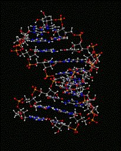
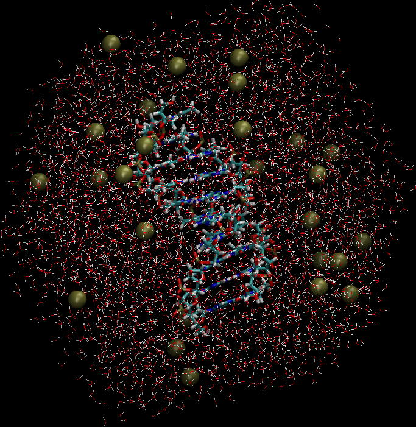

Objective and OverviewThis tutorial provides an overview of the CHARMM commands required to build and simulate either a DNA or RNA duplex in explicit solvent. In addition, an input file provides the appropriate CHARMM commands for converting RNA, which is the default nucleic acid in CHARMM, to DNA. Note, all remaining steps, including solvation, minimization, and simulation, are the same for both DNA and RNA. An image of a duplex is shown on the right |
 |
A nucleic acid duplex (PDB Identifer: 1RRR) is initially downloaded from the Protein Data Bank.
Then, the PDB coordinates are converted to CRD format acceptable to CHARMM. Topology and parameter files used for the calculations are the additive all-atom CHARMM Force Field Files which are located in the tutorial directory.
Once the initial CRD file is created for the RNA structure, it is then used in the CHARMM script file, helix_rna_gen.inp, from which a PSF file and new CRD file are obtained.
For the CHARMM force field, the RNA form of nucleic acids is the default.
Thus, for the building a DNA duplex structure, the CHARMM commands are almost the same as for the RNA duplex, but there is an additional step of removing the 2'OH moieties, as shown in the CHARMM script, helix_dna_gen.inp.
Small changes to the CHARMM scripts allow the use of a PDB file as input for the coordinates:
|
CHARMM CRD Input Coordinates open unit 20 read form name rr_1_noh.pdb.crd read coor card unit 20 |
PDB Input Coordinates rename segid a select segid rna1 end rename segid b select segid rna2 end open unit 20 read form name rr_1.pdb read coor pdb unit 20 resid rename segid rna1 a select segid a end rename segid rna2 b select segid b end |
|
For PDB file input, the segment names are renamed for each chain to match those in the rr_1.pdb file, and then changes them back so the segments have the same names in the later CHARMM scripts. |
|
Once the RNA (or DNA) duplex is constructed, it is then solvated by overlaying an equilibrated water box, followed by deletion of all water molecules that are in too close-contact with RNA. The system is then checked to insure that it is electronically neutral. If the system is not neutral, Na+ ions are added at random positions by first removing an H2O molecule, subsequently replacing H2O with an Na+ ion, and then ensuring that it is not in too-close contact with either the RNA or other solvent molecules at that position. In general, ions can be added or deleted to achieve a neutral system. Note that the present approach yields a system with only minimal salt. If a higher salt concentration is required it is suggested that, more Na+ and Cl- ions be added to obtain the desired ionic strength. An image of the solvated and neutralized system is shown to the right. charmm < helix_dna_solvate.inp > helix_dna_solvate.log charmm < helix_dna_neutralize.inp > helix_dna_neutralize.log |
 |